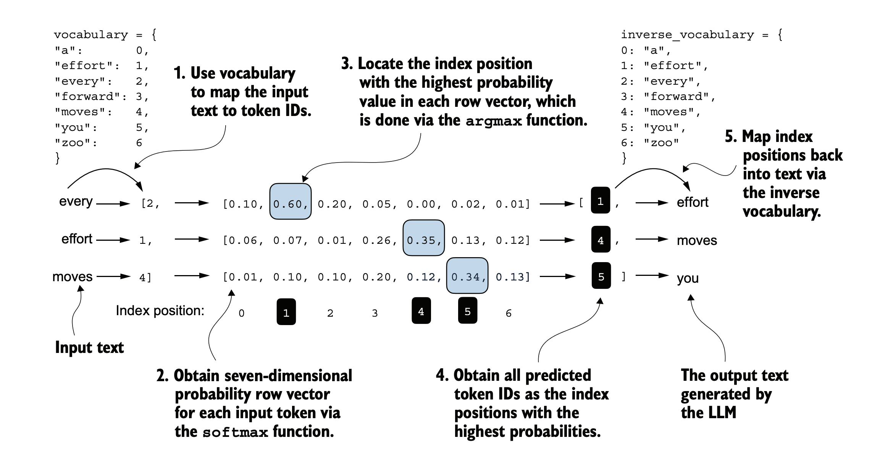
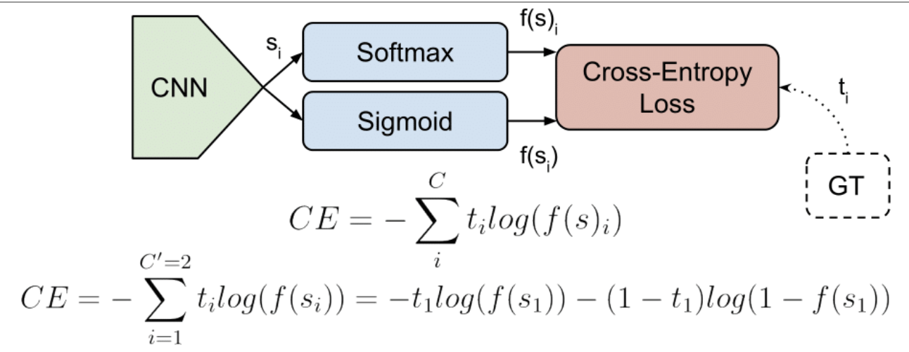

Model Outputs, Cross Entropy, other Evaluations
August 6, 2025
We went over this briefly yesterday, but it's useful to look into it a bit more. So, the shape of the input is of Batch Size * Sequence Length * Embedding Dimension. The output size is of Batch Size * Sequence Length * Vocab Size. The input was well covered, the output was not so well covered. Here's our justification for last time. Apparently we wanted to focus on the very last vector in the output logits, so the last row. However, all rows are significant. Remember, each row is of size Vocab Size. This means that each row has the probabilities for the next token. So, in summary, remember that all rows are predictions. The sliding window problem and the dataset setup results in a process such that multiple predictions are being made per sequeunce. This photo is pretty helpfulu:

Another really important part of this chapter was analyzing the model. While there were many ways, the most important one and the one that was spent the most time on was cross entropy. The concept is relatively simple, we use this complicated mathematical function to compare the model's predictions to the the target outputs, which are basically one hot encoded predictiosn (in other words, 100$ correct guess).We created a function in our own code base to analyze the cross entropy loss of an individual batch and also of a full training load. Take a look:

In summary, I'm getting the understanding that it is extremely important to have these functionaltiies in order to test how well the model is doing. Especially if we are training the model on unique datasets, trying to apply unique styles, etc... The next steps are according to the book is to implement a trainings sequence based on the verdict story. But, I would love to train the model on possibly an interesting writer, like that Persian guy, or something else. But I believe that would be really hard to get a full dataset of. Plus it would be really unpredictable, because sometimes authors can be a little bit poetic. But still, I'm excited to keep trying on larger and larger datasets. I understand that it's going to be pretty easy to load pretrained weights into the model , but for some reason that makes me feel like this entire process was an complicated API call and I definitely don't want that. I would love to train the dataset myself, and that's my goal. The book has a dataset in the appendix from project gutenberg -- im might train it on that. Anyway, that's all from me. Thanks for listening. This blog is going to start looking better by the way, it loooks atrocious right now.